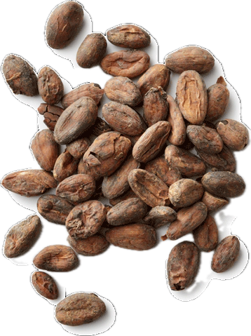

Theobroma cacao
Overview
Cacao is the dried and fermented seeds of the cacao tree, native to the tropical regions of Central and South America. It is the primary ingredient in chocolate and cocoa products and has been cultivated for thousands of years for its culinary and medicinal properties. Cacao has a rich, complex flavor with bitter, fruity, and nutty notes.
Cultural Overlap
Cacao has a deep cultural significance in ancient Mesoamerican civilizations such as the Maya and Aztec, who considered it a sacred plant and used it in religious rituals and ceremonies. Today, cacao is consumed worldwide in various forms, including chocolate, cocoa powder, and cacao nibs. It is also used in traditional medicine for its potential health benefits.